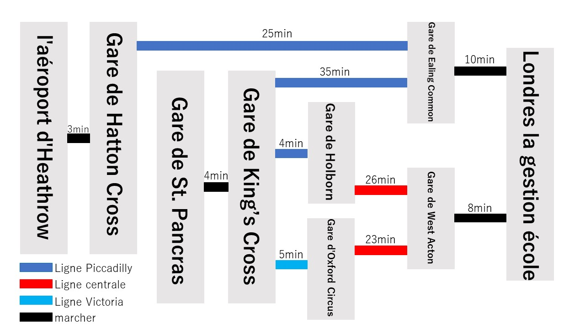

Comment accéder
Fou des personnes venant en transport
Situé à Acton, West London Ealing London.
Situé à environ 45 minutes du centre de Londres. Le quartier est très sécurisé et de nombreux étrangers y vivent.
From central London
Depuis la gare de King's Cross, à 4 minutes à pied de la gare de St. Pancras, prendre la ligne Piccadilly jusqu'à la station Ealing CommonDepuis la gare de King's Cross, à 4 minutes à pied de la gare de St. Pancras, prendre la ligne Piccadilly jusqu'à Holborn Station.
Changement de Central Line à West Acton Station
Depuis la gare de King's Cross, à 4 minutes à pied de la gare de St. Pancras,
prenez la ligne Victoria jusqu'à la station Oxford Circus.
Changement de Central Line à West Acton Station
Depuis l'aéroport
Depuis la gare de Hatton Cross, à 3 minutes à pied de l'aéroport d'Heathrow,prendre la ligne Piccadilly jusqu'à la station Ealing Common
Comment accéder
Fou des personnes venant en transport
Situé à Acton, West London Ealing London. Situé à environ 45 minutes du centre de Londres. Le quartier est très sécurisé et de nombreux étrangers y vivent.
| From central London | Depuis la gare de King's Cross, à 4 minutes à pied de la gare de St. Pancras, prendre la ligne Piccadilly jusqu'à la station Ealing Common |
|---|---|
| Depuis la gare de King's Cross, à 4 minutes à pied de la gare de St. Pancras, prendre la ligne Piccadilly jusqu'à Holborn Station. Changement de Central Line à West Acton Station | |
| Depuis la gare de King's Cross, à 4 minutes à pied de la gare de St. Pancras, prenez la ligne Victoria jusqu'à la station Oxford Circus. Changement de Central Line à West Acton Station | |
| Depuis l'aéroport | Depuis la gare de Hatton Cross, à 3 minutes à pied de l'aéroport d'Heathrow, prendre la ligne Piccadilly jusqu'à la station Ealing Common |
